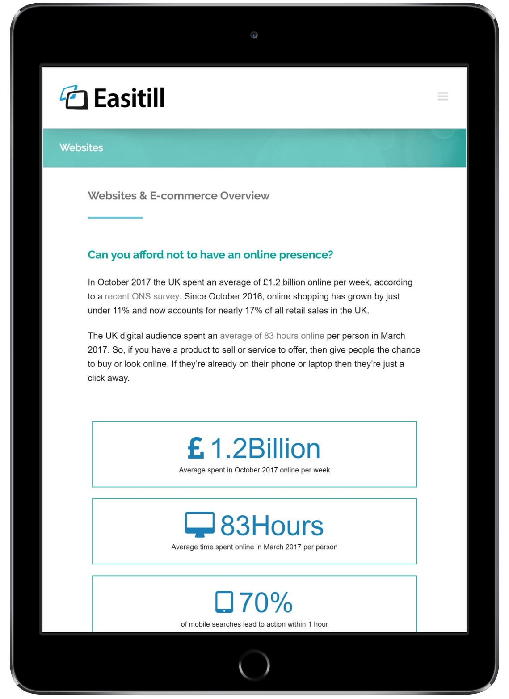

Easitill is a voluntary organisation committed to promoting the welfare of families with at least one child under five years of age and living in the Borough of Northampton.
At the beginning of 2017, I and three of my university colleagues were informed that the organisation intends to have a new, modern image that represents their values in a more appropriate way. We were convinced by their cause and worked as volunteers during that year on their new website.
